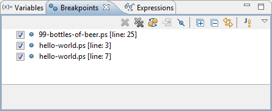

The Breakpoints View is part of the Debug Perspective. It lists all the breakpoints you currently have set in your workspace.
You can double-click a breakpoint to display its location in the editor. You can also enable or disable breakpoints, or delete them.
